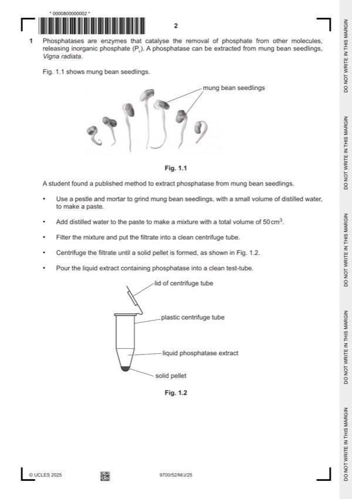

Question 1

Original paper page 2
Part 1(a) — solution
any two from: 2
Mark points
- Include the ideas shown in the solution above.
Part 1(b)(i) — solution
explanation 2
idea of the temperature (of, solutions / reactants) will not have reached 30 ºC / AW
or
the rate of (enzyme)reaction, will change / not be constant / AW
or
reaction will start before reaching 30 ºC / AW ;
modification
equilibrate / AW, phosphatase/enzyme/extract and PPP/substrate, separately
or
equilibrate / AW , phosphatase / enzyme / extract and PPP / substrate before mixing ;
Mark points
- Include the ideas shown in the solution above.
Part 1(b)(ii) — solution
(sodium carbonate solution) denatures, the enzyme / phosphatase ; 1
University Press & Assessment 2025 Page 8 of 13
9700/52 Cambridge International AS & A Level – Mark Scheme May/June 2025
Mark points
- Include the ideas shown in the solution above.
Part 1(c) — solution
1 five stated concentrations between 2 % and 0 % and units, % / percentage ; 2
Mark points
- Include the ideas shown in the solution above.
Part 1(d) — solution
1 absorbance / AW, for the dilutions and extract / reaction mixture ; 2
Mark points
- Include the ideas shown in the solution above.
Part 1(e) — solution
any six from: 6
Mark points
- Include the ideas shown in the solution above.
Part 1 — solution
prepare five solutions with stated pH values up to pH 7 ;
Mark points
- Include the ideas shown in the solution above.
Part 1(e) — solution
hazard risk precaution
phosphatase enzyme / mung allergy / irritant gloves / eye protection / PPE
bean / extract
phenolphthalein phosphate (PPP)
sodium carbonate
pH buffer irritant pH 3–7 gloves / eye protection / PPE
or
corrosive below pH 4
phenolphthalein toxic / irritant / allergy gloves / eye protection / PPE
flammable keep away from naked flame
Mark points
- Include the ideas shown in the solution above.
Part 1(f)(i) — solution
point 6 on top line is circled ; 2
higher than, the Vmax / 0.018 (mmol dm–3 s–1) / the plateau ;
Mark points
- Include the ideas shown in the solution above.
Part 1(f)(ii) — solution
(Km with no inhibitor) 0.075 1
and
(Km with inhibitor) 0.43 / 0.425
and
mmol dm–3 ;
Mark points
- Include the ideas shown in the solution above.
Part 1(f)(iii) — solution
1 working 2
difference divided by Km with no inhibitor (100)
(0.425 – 0.075) / 0.075 (100) ;
Mark points
- Include the ideas shown in the solution above.
Part 1 — solution
(same) time of the year
or
(same) seasons
or
(same) months ;
Mark points
- Include the ideas shown in the solution above.
Part 1 — solution
correct index data quoted to support conclusion about species diversity ;
any two from mp2–6:
diversity in different locations in the bay:
Mark points
- Include the ideas shown in the solution above.